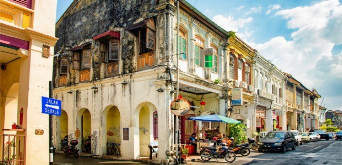

Dates 9-18 Dec 23
Penang Malaysia

- Penang is the second smallest state in Malaysia, and is composed of two parts – Penang Island and Seberang Perai on the Malay Peninsula.
- Penang was part of the Malay sultanate of Kedah until 1786, when Captain Francis Light built a fort at the site of present-day Georgetown and managed to get the island ceded to the British East India Company. Penang became the first British outpost in Southeast Asia in 1786. The island, along with Malacca and Singapore, was one of the three British Straits Settlements
- The name Penang comes from the Malay word Pinang, means the betel nut tree. The original name of Penang was Pulau Ka-satu or “First Island”, but on August 12, 1786 it was it renamed to Prince of Wales Island to commemorate the birthday of the Prince of Wales, who later became George IV
- The capital, Georgetown, was named after King George III of Great Britain. Today, Penang has the highest population density in Malaysia and is the only state where the ethnic Chinese are the majority. Georgetown is a UNESCO World Heritage Site. George Town became the first city in the Federation of Malaya — by a royal charter granted by Her Majesty Queen Elizabeth II — on January 1, 1957
- Penang is the birthplace of shoe designer Jimmy Choo, the co-founder of Jimmy Choo Ltd that is known for its handmade women’s shoes. Born into a family of shoemakers, Choo’s father taught him the art of shoe-making. Jimmy made his first shoe when he was 11 years old
- The Kek Lok Si-Temple of Supreme Bliss, a sprawling hillside structure, is said to be the largest Buddhist temple in South-East Asia. A funicular train transports you to the summit of the hill featuring a giant statue of Kuan Yin, the Goddess of Mercy

-
"Singapore Airline have good flights"
- Boots - Jan 23
-
"Lee Read is now 80% chance of Going"
- Gary Dec 22
-
"Doug is 50/50"
- Gary Aug 22

 Watch a video
Watch a video